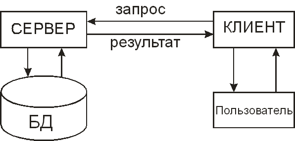
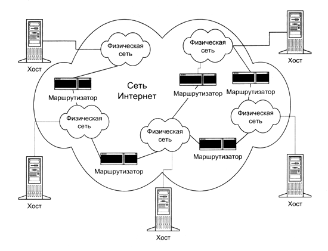
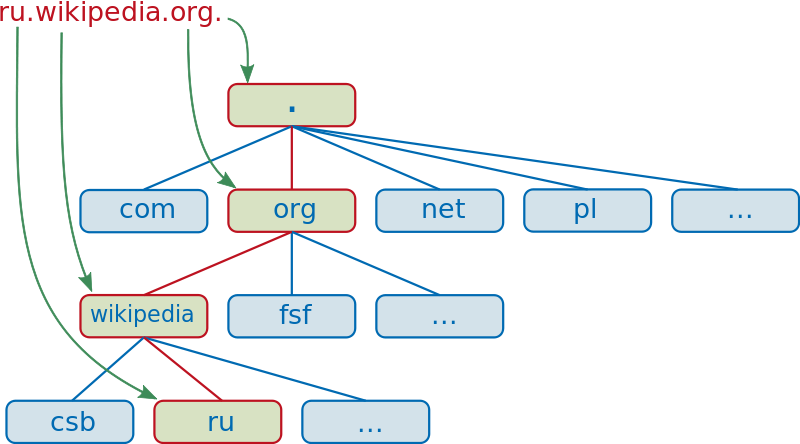

Операционные системы
- Windows XP, Vista, 7, 8
- Linux (Ubuntu, Debian, CentOS, etc.)
- OS X
- FreeBSD, OpenBSD, Solaris, etc.
Browsers


Текстовые редакторы
- Notepad (Блокнот)
- Notepad++
- Sublime Text
- WebStorm IDE
- и множество других
Клиент-серверное взаимодействие
Клиент-серверное взаимодействие
- Клиент - браузер
- Сервер - Web-сервер
- Протокол - HTTP (HyperText Transport Protocol)
Структура сети Интернет
IP адресация
Каждый компьютер в сети Интернет имеет свой уникальный IP-адрес
IP-адрес - это 4 числа (от 0 до 255), разделенных точкой
Например, 193.162.230.11
DNS
Домен (англ. domain — область) — узел в дереве имён, вместе со всеми подчинёнными ему узлами (если таковые имеются), то есть именованная ветвь или поддерево в дереве имен.
URI (Uniform Resource Identifier)
URI — это символьная строка, позволяющая идентифицировать какой-либо ресурс: документ, изображение, файл, службу, ящик электронной почты и т.д.
URI = [ схема ":" ] иерархическая-часть [ "?" запрос ] [ "#" фрагмент ]
Примеры URI
- http://ru.wikipedia.org/wiki/URI
- ftp://ftp.is.co.za/rfc/rfc1808.txt
- mailto:John.Doe@example.com
- telnet://192.0.2.16:80/
- /relative/URI/with/absolute/path/to/resource.txt
- relative/path/to/resource.txt
- resource.txt
- ../../../resource.txt
- /resource.txt#frag01
- #frag01
Структура и оформление документа
- Структура (языки разметки)
- HTML (HyperText Markup Language)
- Markdown
- LaTeX и другие
- Стилевое оформление - CSS (Cascading Style Sheets)
Версии HTML
- HTML 4
- XHTML 1.0
- HTML 5 (в разработке)